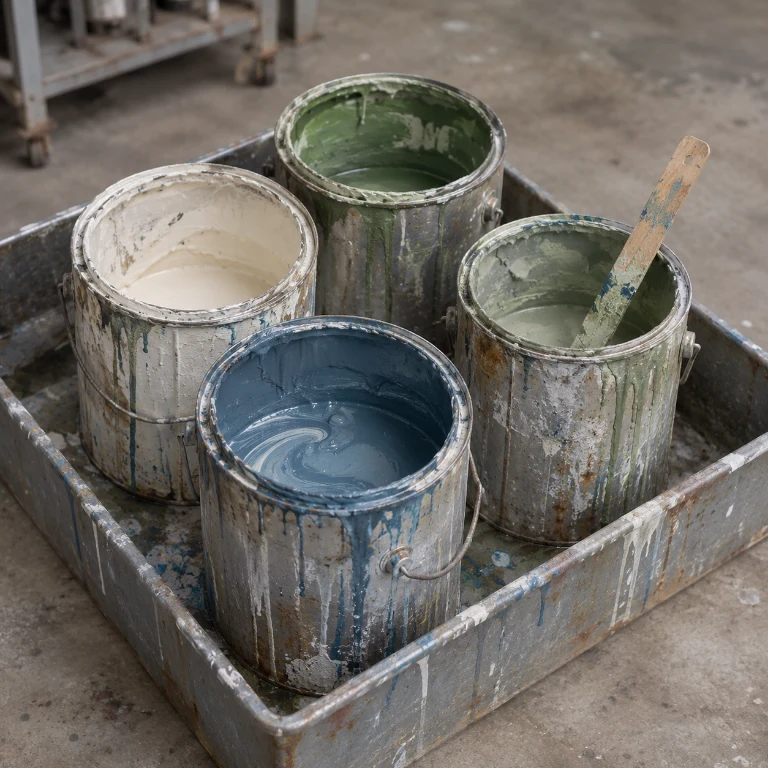
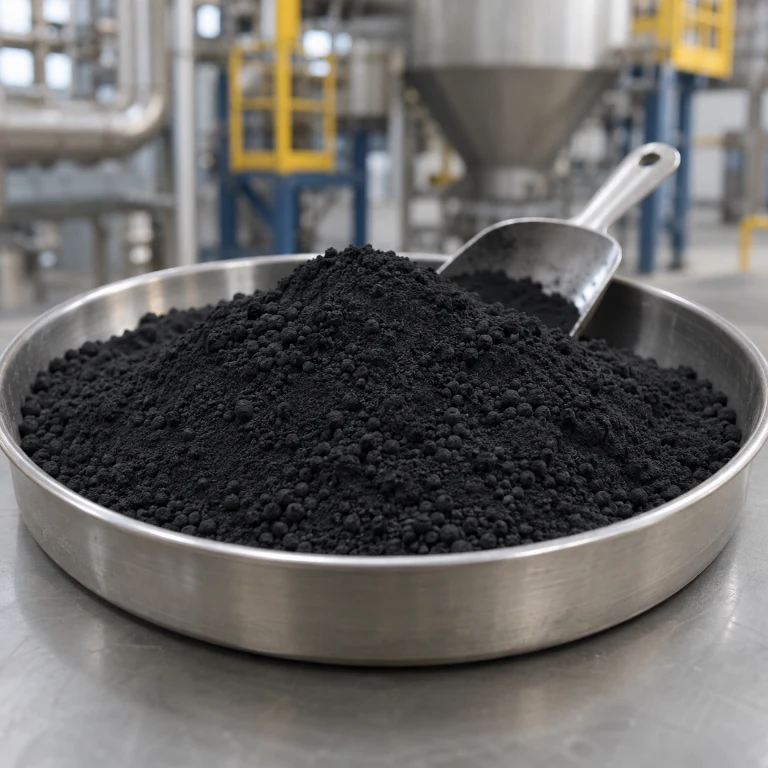
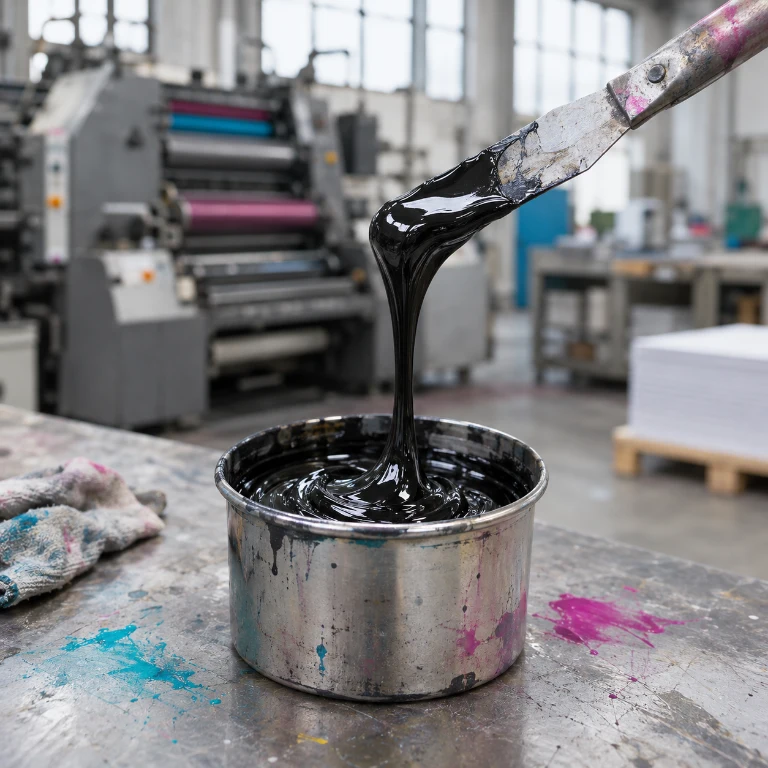
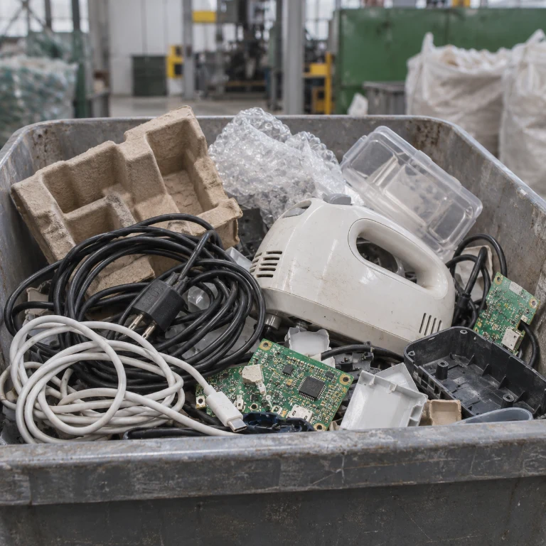
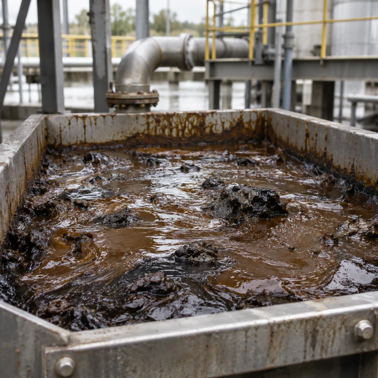
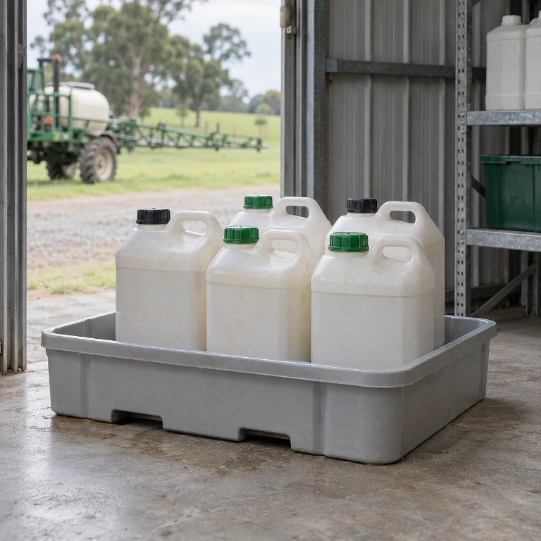
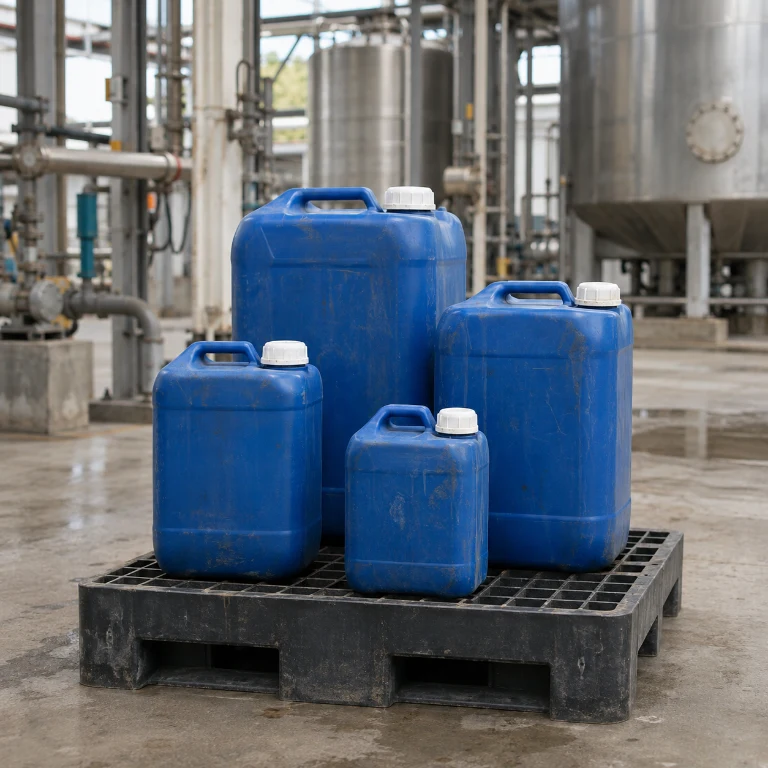
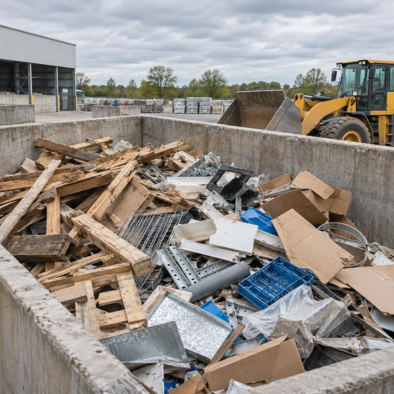

With the US producing over 254 million tons of solid waste annually and about 140 million tons going to landfills, the need for alternative waste management solutions is urgent.

Waste Becomes Engineered Fuel
Innovative recycling that transforms non-hazardous waste into alternative, eco-friendly fuels for cement kilns.
254M
Tons of solid waste annually
140M
Tons going to landfills
3
Strategic sites
200
lbs of engineered fuel per ton of cement
The Challenge
The Non Hazardous Waste Industry At A Glance
Alternative Engineered Fuel volumes to rise from 297,000 to 502,000 tons (6.07%) by 2032.
Rapidly emerging as a sustainable solution to diverting waste from landfills.
US Market Share
- 67%Landfill
- 23%Incinerate for Electricity
- 9%Alternative Fuels
Our Solution
From Waste to Engineered Fuel

Innovative recycling
Transforms non-hazardous waste into alternative, eco-friendly fuels for cement kilns.
Energy recovery
Enhance energy recovery using innovative recycling.
Sustainability
Championing sustainability, excellence, and efficiency.
Feedstocks
Targeted Waste Streams

Paints

Carbon black

Inks

Consumer products

Oily sludges

Pesticides and herbicides

Isocyanates

Industrial plant trash
Get Started